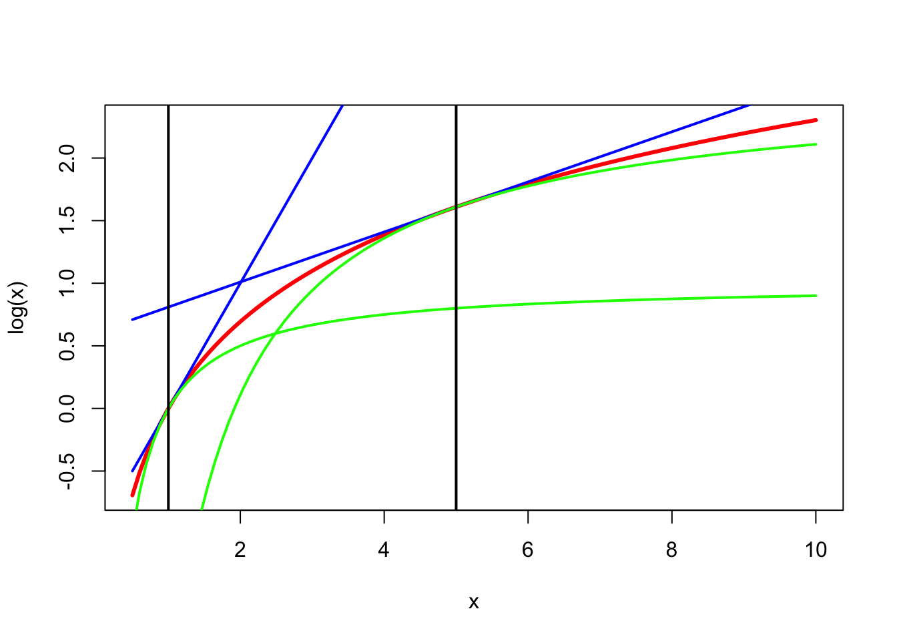
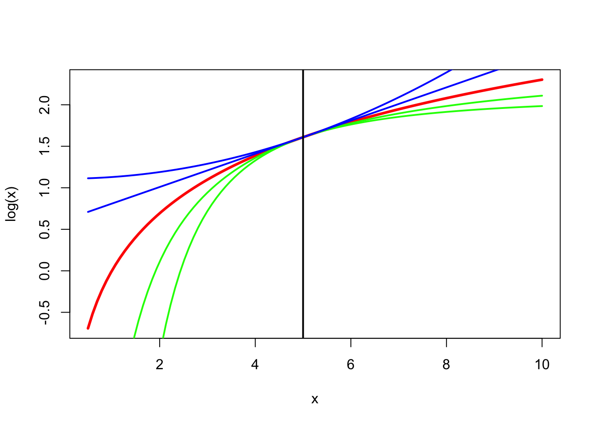

3 Using Convexity
3.1 Using Convexity
There are two major ways in which we use convexity in majorization.
First, we can use the definition of convex functions directly. Thus we rely on the inequality \[ f(\sum_{i=1}^n w_ix_i)\geq\sum_{i=1}^n w_if(x_i), \] where the \(w_i\) are non-negative weights adding up to one. This inequality separates the variables, in the sense that it allows us to substitute a sum of univariate functions for a multivariate one.
Second, we can use the results on the derivatives of convex functions. If \(f\) is convex, then \[ f(x)\geq f(y)+z'(x-y), \] with \(z\in\partial f(y),\) the subgradient of \(f\) at \(y.\) Thus convex functions have a linear minorizer. In the same way concave functions have a linear majorizer.
##Jensen’s Inequality
Jensen’s inequality is often formulated in probabilistic terms, using expected values. It is a direct reformulation of the definition of a concave function.
Theorem: Suppose \(g\) is a concave function on \(\mathcal{S}\subset\mathbb{R}^n,\) and suppose \(\pi\) is a weight function such that \(\int_\mathcal{S}\pi(x)dx=1,\) and \(\mu\mathop{=}\limits^{\Delta}\int_\mathcal{S} x\pi(x)dx\) is finite. Then \(\int_\mathcal{S}\pi(x)g(x)dx\leq g(\mu),\) with equality if and only if \[g\] is linear a.e.
Proof: If \(g\) is concave, then \(g(x)\leq g(\mu)+(x-\mu)'\eta(\mu),\) where \(\eta(\mu)\) is an arbitrary element of the subgradient of \(g\) at \(\mu.\) Multiplying both sides by \(\pi(x),\) and integrating gives the required result. QED
3.1.1 Tomography
Suppose the function \(f\) we must minimize is defined by \[ f(x)=h(\sum_{i=1}^n w_ix_i), \] where \(h\) is a convex function of a single variable, and \(w\) is a vector of positive numbers.
If \(y\) is another vector of \(n\) positive numbers we can write \[ f(x)=h\left(\sum_{i=1}^n \left(\frac{w_iy_i}{w'y}\right)\left(\frac{w'y}{y_i}x_i\right)\right), \] and if \(g\) is defined as \[ g(x,y)=\sum_{i=1}^n\left(\frac{w_iy_i}{w'y}\right)h\left(\frac{w'y}{y_i}x_i\right) \] then, by the defintion of convexity, \(f(x)\leq g(x,y)\). Also, clearly, \(f(x)=g(x,x)\) and thus we have a majorization on \((\mathbb{R}^+)^n\).
Alternatively, for any positive vector \(\pi\) with elements adding up to one, \[ f(x)=h\left(\sum_{i=1}^n\pi_i\left(\frac{w_i}{\pi_i}(x_i-y_i)-w'y\right)\right), \] and the majorization is \(g\) defined by \[ g(x,y)=\sum_{i=1}^n\pi_ih\left(\frac{w_i}{\pi_i}(x_i-y_i)-w'y\right). \]
###Logs of Sums and Integrals
Suppose we want to minimize \[ f(x)=-\log\int_{\mathcal{Z}} p(x,z)dz \] where \(p:\mathcal{X}\otimes\mathcal{Z}\rightarrow\mathbb{R}^+\).
It is convenient to define \[\begin{align*} p(z\mid x)&\mathop{=}\limits^{\Delta}\frac{p(x,z)}{\int_\mathcal{Z}p(x,z)dz},\\ q(x,y)&\mathop{=}\limits^{\Delta}\int_\mathcal{Z}p(z\mid y)\log p(x,z)dz, \end{align*}\] and \[ g(x,y)=f(y)+q(y,y)-q(x,y). \]
Theorem: For all \(x,y\in\mathcal{X}\) we have \(f(x)\leq g(x,y)\) with equality if and only if \(p(x,z)=p(y,z)\) a.e. Consequently \(g\) majorizes \(f\) on \(\mathcal{X}\).
Proof: By Jensen’s inequality
\[\begin{multline*} \log\frac{\int_\mathcal{Z} p(x,z)dz}{\int_\mathcal{Z} p(y,z)dz}= \log\int_\mathcal{Z} p(z\mid y)\frac{p(x,z)}{p(y,z)}dz \geq \\ \geq\int_\mathcal{Z} p(z\mid y)\log\frac{p(x,z)}{p(y,z)}dz =\\ =\int_\mathcal{Z}p(z\mid y)\log{p(x,z)}dz -\int_\mathcal{Z}p(z\mid y)\log{p(y,z)}dz. \end{multline*}\]
Thus \[ -f(x)+f(y)\geq q(x,y)-q(y,y) \] But this exactly the statement of the theorem. QED
Maximizing the right-hand-side by block relaxation is the EM algorithm (Dempster, Laird, and Rubin (1977)). Usually, of course, the EM algorithm is presented in probabilistic terms using the concept of likelihood and expectation. This has considerable heuristic value, but it detracts somewhat from seeing the essential engine of the algorithm, which is the majorization.
##The EM Algorithm
The E-step of the EM algorithm, in our terminology, is the construction of a new majorization function. We prefer a nonstochastic description of EM, because maximizing integrals is obviously a more general problem.
#Tangential Majorization
##Using the Tangent
3.1.2 Majorizing and Minorizing the Logarithm
The logarithm is concave. Consequently, for all positive \(x\) and \(y\), we have the linear majorizer \[ \log x\leq\log y+\frac{1}{y}(x-y)=\log y+\frac{x}{y}-1. \] We can apply the same concavity to get a minorizer \[ \log\frac{1}{x}\leq\log\frac{1}{y}+y(\frac{1}{x}-\frac{1}{y}), \] which is \[ \log x\geq \log y-\frac{y}{x}+1. \] These majorizers and minorizers of the logarithm are illustrated in Figure 1 for \(y=1\) and \(y=5\).
More generally, we have \[ \log x\leq\log y+\frac{1}{p}\left\{\left(\frac{x}{y}\right)^p-1\right\} \] for all \(p>0\) and \[ \log x\geq\log y+\frac{1}{p}\left\{\left(\frac{x}{y}\right)^p-1\right\} \] for all \(p<0\). See Figure 2, where \(y=5\) and \(p=\{-2,-1,1,2\}\).

3.1.3 Aspects of Correlation Matrices
Suppose \(\underline{x}_j,\cdots,\underline{x}_m\) are random variables, and \(\mathcal{K}_j\) are convex cones of Borel-measurable real-valued functions of \(\underline{x}_j\) with finite variance. The elements of \(\mathcal{K}_j\) are called transformations of the variable \(\underline{x}_j\).
For instance, \(\mathcal{K}_j\) can be the cone of monotone transformations, or the subspace of splines with given knots, or the subspace of quantifications of a categorical variable
A transformation \(\kappa\in\mathcal{K}\) is standardized if \(\mathbf{E}(\kappa(\underline{x}))=0\) and \(\mathbf{E}(\kappa^2(\underline{x}))=1\). Standardized transformations define a sphere \(\mathcal{S}_j\).
Now suppose \(f\) is a concave and differentiable function defined on the space of all correlation matrices \(R\) between \(m\) random variables. Suppose we want to minimize \[ g(\kappa_1,\cdots,\kappa_m)\mathop{=}\limits^{\Delta}f(R(\kappa_1(\underline{x}_1),\cdots,\kappa_m(\underline{x}_m))) \] over all transformations \(\kappa_j\in\mathcal{K}_j\cap\mathcal{S}_j\).
Because \(f\) is concave \[f(R)\leq f(S)+\hbox{ tr }\nabla f(S)(R-S).\] Collect the partials in the matrix \(G.\) A majorization algorithm can minimize \[ \sum_{i=1}^m\sum_{j=1}^m g_{ij}(S)\mathbf{E}(\kappa_i\kappa_j), \] over all standardized transformations, which we do with block relaxation using \(m\) blocks. In each block we must maximize a linear function on a cone, under a quadratic constraint, which is usually not hard to do.
This algorithm generalizes ACE, CA, and many other forms of MVA with OS. It was proposed first by De Leeuw [1988a], with additional theretical results in De Leeuw [1988b]. The function \(f\) can be based on multiple correlations, eigenvalues, determinants, and so on.
3.1.4 Partially Observed Linear Systems
J. De Leeuw (2004) discusses the problem of finding an approximate solution to the homogeneous linear system \(AB=0\) when there are cone and orthonormality restrictions on the columns of \(A\) and when some elements of \(B\) are restricted to known values, most commonly to zero. Think of the columns of \(A\) as variables or sets of variables, and think of \(B\) as regression coefficients or weights.
The loss function used by J. De Leeuw (2004) is \[ f(R)\mathop{=}\limits^{\Delta}\min_{B\in\mathcal{B}}\mathbf{tr} B'RB,\tag{1} \] with \(R\mathop{=}\limits^{\Delta}A'A\) and with \(\mathcal{B}\) coding the constraints on \(B\). Note that the computation of the optimal \(B\) in \(\text{(1)}\) is a least squares problem, and even with linear inequality constraints on \(B\) it is still a straightforward quadratic programming problem.
The function \(f\) in \(\text{(1)}\) is the pointwise minimum of linear functions in \(R\), and thus it is a concave function of \(R\). This means we are in the “aspects of correlation matrices” framework discussed in the previous section.
In particular we define \[ B(R)\mathop{=}\limits^{\Delta}i\{\hat B\mid\mathbf{tr}\ \hat B'R\hat B=\min_{B\in\mathcal{B}}\mathbf{tr}\ B'RB\}, \] then the subgradient of \(f\) at \(R\) is \[ \partial f(R)=\mathbf{conv}(BB'\mid B\in B(R)). \] The subgradient inequality now says that for all correlation matrices \(R\) and \(S\) we have \(f(R)\leq \mathbf{tr}\ \nabla R\) for all \(\nabla\in\partial f(S)\).
The constraints on \(A\) discussed in J. De Leeuw (2004) make it possible to fit a wide variety of multivariate analysis techniques. Columns of \(A\), or variables, are partitioned into blocks. Some blocks contain only a single variable, such variables are called single. Some blocks are constrained to be orthoblocks, which means that the variabes in the block are required to be orthonormal. Single variables may be cone-constrained, which means the corresponding column of \(A\) is constrained to be in a cone in \(\mathbb{R}^n\). And orthoblocks may be subspace-constrained, which means all columns must be in the same subspace.
We mention some illustrative special cases here. Common factor analysis of a data matrix \(Y\) means finding an approximate solution to the system \[ \begin{bmatrix} Y&\mid&U&\mid&E \end{bmatrix} \begin{bmatrix} \ \ I\\ -\Gamma\\ -\Delta \end{bmatrix} = 0 \] with \(U'U=I\), \(E'E=I\), \(U'E=0\), and \(\Delta\) diagonal. The common factor scores are in \(U\), the unique factor scores in \(E\), the factor loadings in \(\Gamma\) and the uniquenesses in \(\Delta\). This example can be generalized to cover structural equation models
Homeogeneity analysis Gifi (1990) is the linear system \[ \begin{bmatrix} X&\mid&Q_1&\mid&\cdots&\mid&Q_m \end{bmatrix} \begin{bmatrix} I&I&I&\cdots&I\\ -\Gamma_1&0&0&\cdots&0\\ 0&-\Gamma_2&0&\cdots&0\\ 0&0&-\Gamma_3&\cdots&0\\ \vdots&\vdots&\vdots&\ddots&\vdots\\ 0&0&0&\cdots&-\Gamma_m \end{bmatrix}=0 \] where \(X\) is and orthoblock of object scores, while the \(Q_j\) are orthoblocks in the subspaces defined by the indicator matrices (or B-spline bases) of variable \(j\). For single variables \(Q_j\) only has a single column, which can be cone-constrained. For multiple correspondence analysis \(X\) and all \(Q_j\) have the same number of columns. For nonlinear principal component analysis all variables are single and the \(\Gamma_j\) are \(1\times p\).
In both examples the majorization algorithm is actually an alternating least squares algorithm. In the factor analysis example the loss functon is \[ \sigma(Y,U,\Gamma,E,\Delta)=\|Y-U\Gamma-E\Delta\|^2, \] and in homogeneity analysis it is \[ \sigma(X,Q_1\cdots,Q_m,\Gamma_1,\cdots,\Gamma_j)=\sum_{j=1}^m\|X-Q_j\Gamma_j\|^2. \]
3.1.5 Gpower
** Rewrite for minimizing a concave function 02/21/15 **
Consider the problem of maximizing a convex function \(f\) on a compact set \(\mathbf{X}\). The function is not necessarily differentiable, the constraint set is not necessarily convex. Define \[ f^\star\mathop{=}\limits^{\Delta}\max_{x\in\mathcal{X}} f(x). \] For all \(x,y\) and \(z\in\partial f(y)\) we have the subgradient inequality \[ f(x)\geq f(y)+z'(x-y). \] Thus the majorization algorithm is \[ x^{(k+1)}\in\mathbf{Arg}\mathop{\mathbf{max}}\limits_{x\in\mathcal{X}} z'x, \] where \(z\) is any element of \(\partial f(x^{(k)})\).
Define \[ \delta(y)\mathop{=}\limits^{\Delta}\max_{x\in\mathcal{X}} z'(x-y) \] where \(z\in\partial f(y)\). Then \(\delta(y)\geq 0\) and \(\delta(y)\) vanishes only when \(z\) is in the normal cone to \(\mathbf{conv}(\mathcal{X})\) at \(y\). \[ f(x^{(k+1)})\geq f(x^{(k)})+\delta(x^{(k)}). \] It follows that \[ f(x^{(k+1)})-f(x^{(0)})=\sum_{i=0}^k(f(x^{(i+1)})-f(x^{(i)}))\geq\sum_{i=0}^k\delta(x^{(i)}), \] and \[ S_k\mathop{=}\limits^{\Delta}\sum_{i=0}^k\delta(x^{(i)})\leq f^\star-f(x^{(0)}).\tag{1} \] Thus the partial sums \(S_k\) define an increasing sequence, which is bounded above and consequently converges. This implies its terms converge to zero. i.e. \[ \lim_{k\rightarrow\infty}\delta(x^{(k)})=0. \] If \[ \delta_k\mathop{=}\limits^{\Delta}\min_{0\leq i\leq k}\delta(x^{(i)}), \] then, from \(\text{(1)}\), \[ \delta_k\leq\frac{f^*-f(x^{(0)})}{k+1}. \]
3.2 Broadening the Scope
3.2.1 Differences of Convex Functions
For d.c. functions (differences of convex functions) such as \(\phi=\alpha-\beta\) we can write \(\phi(\omega)\leq\alpha(\omega)-\beta(\xi)-\eta'(\omega-\xi),\) with \(\eta\in\partial\beta(\xi).\) This gives a convex majorizer. Interesting, because basically all twice differentiable functions are d.c.
** Add: convexification 02/21/15 **
Suppose \(f(x)=\frac14 x^4-\frac12 x^2\). If we look for a majorization then our first thought is to majorize the first term, because the second is already nicely quadratic. But in this case we proceed the other way around.
In fact, let’s consider the more general case \(f(x)=\frac14 x^4-h(x)\), where \(h\) is convex and differentiable. Note \(f\) is indeed the difference of two convex functions. We see that \(f'(x)=x^3-h'(x)\) and \(f''(x)=3x^2-h''(x)\).
Using tangential majorization for \(h\) gives \[ g(x,y)=\frac14 x^4-h(y)-h'(y)(x-y). \] Clearly \(g\) is convex in \(x\) for every \(y\), and since \(\mathcal{D}_1g(x,y)=x^3-h'(y)\) we have \[ x^{(k+1)}=\sqrt[3]{h'(x^{(k)})}. \] The iteration radius at a fixed point turns out to be \[ \kappa(x)=\frac{h''(x)}{f''(x)+h''(x)}=\frac13\frac{h''(x)}{x^2}. \]
For \(h(x)=\frac12 x^2\) we have \(h'(x)=x\). Convergence is to \(\pm 1\), and thus, using l’Hôpital’s rule, \[ \kappa(1)=\lim_{x\rightarrow 1}\frac{\sqrt[3]{x}-1}{x-1}=\frac13. \] For \(h(x)=|x|\) we have \(h'(x)=\pm 1\) if \(x\not= 0\), and thus \(x^{(k+1)}=\pm 1.\) The algorithm finishes in a single step, with the correct solution.